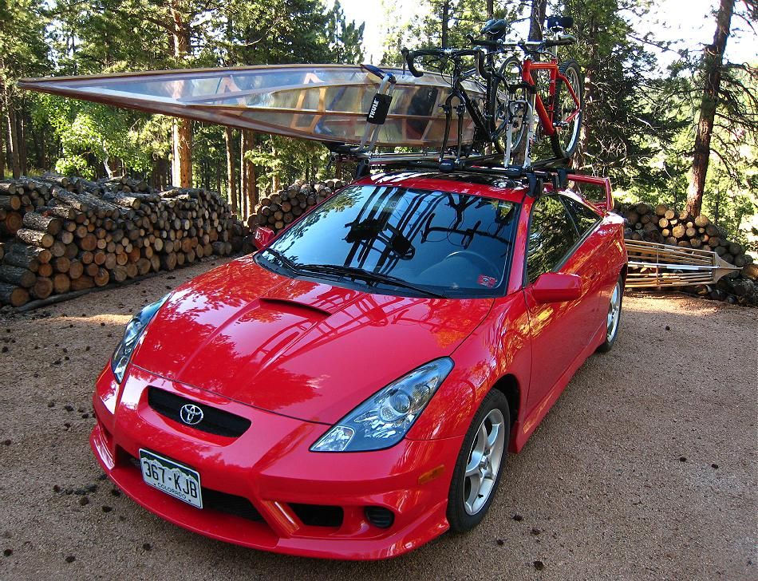

| Transport | Menu Previous Page Next Page |
|

A 17.5' X 19" X 21lb Sea Rider and two bikes atop the Celica. The narrow "on edge" J-carriers allow more equipment onto this narrow rack system ( 50" Yakima bars). Total weight of the boat and 2 bikes is 65lbs.
|
|